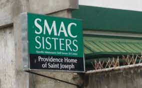

Where does the foundation get most of its funding?
We want to know what is the source of money for these foundations. Moreover, is the funding that the foundation receives enough to maintain to facility.
Do all the children go to the same school? Or are there situations where some go to different schools?
We want to know if all the children go to the same school or if there are times where some children go to another school. It may be because of budget issues or because of academic issues.
What is the protocol when a child becomes ill?
We would like to find out what happens when a child becomes sick. What measures do they have in place to make sure they get better and the disease doesn’t spread.
What are the hardships the institution encounters when taking in children? If so, what did they do to resolve it?
We want to know what the institution encounters when they are faced with a problem when taking in the children and how they resolved it.
Looking back at the institution needs and resources that we possess, the best option for us is to sell grown vegetables, plants, organic fertilizer. Currently, we have access to all the factors of
production that will allow us to put up some business. We have the land in the institution and our own homes to grow these plants/test the fertilizer. We have enough starting
capital to buy the seeds for planting. There is enough people to carry out certain tasks. Lastly, we can use the study on effective fertilizers that we are developing in our
Chemistry class in order to grow vegetables and plants to sell. We see this as the most beneficial option because we have all the necessary materials to put up this kind of
business and it is something that they can continue to carry out even after we leave.


We have access to factors of production such as land, capital, labor, and entrepreneurship. The group members, our labour resources and entrepreneurs, have experience in planting and
taking care of plants. This is helpful so we can sell plants of good quality. In addition to this we are currently researching composting which is beneficial to help us with our
gardening-based business idea. We can make use of our natural resources such as land at home to begin the business. Moreover, savings from each members is good enough to invest in
a small start-up that will kick start the project.
The proposal itself is already sustainable as it is, however, if we were to further it, then we could give our study about growing crops to our partner institution.
We will make sure that we leave knowing that they have the full information about how to run the proposed business. The materials needed to run this business are fairly
cheap and low maintenance making it easy for the foundation to pursue it in the long run. Additionally the products they sell are mainly used for gardening, perfect for
people who want to start it or those who already have. This means that there will always be a target audience for this business or someone that would want to buy these
things. It covers people that want to just buy vegetables to eat and even people that will constantly need materials to grow their own crops.
9Favre - Group 1B: Advincula, Bacani, Calero, Madres, Sayre